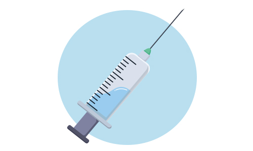

INYECTOLOGÍA
La importancia de la inyectología radica en su capacidad para garantizar que los
tratamientos lleguen de manera segura y efectiva al organismo. Esto es clave en entornos
médicos, donde la correcta aplicación de una inyección puede marcar la diferencia en la
recuperación de un paciente.
Permite que los profesionales de la salud puedan:
- Administrar medicamentos de acción rápida: algunas medicinas, como los analgésicos o antibióticos, requieren llegar rápidamente al flujo sanguíneo, lo cual se logra mediante una inyección.
- Asegurar una dosificación precisa: al inyectar un medicamento, el profesional puede controlar la cantidad exacta que el paciente necesita, reduciendo el riesgo de errores en la dosis.
- Minimizar los efectos secundarios: al aplicar directamente en el cuerpo, ciertos medicamentos evitan el sistema digestivo, disminuyendo el riesgo de efectos secundarios como malestar gástrico o irritación estomacal